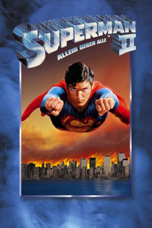

#2372 Superman II - Allein gegen alle
Alternativ: Superman II
 
 IMDB-Wertung: 6.8 / 10
IMDB-Wertung: 6.8 / 10  Metascore: 87
Metascore: 87 
Zweiter Teil der erfolgreichen Comicverfilmungen. Terroristen besetzen den Eiffelturm und drohen, eine Wasserstoffbombe zu zünden. Superman schafft es, die Bombe im Weltall zu entsorgen. Die Explosion befreit General Zod, Ursa und Non, die in der Phantomzone gefangen waren. Clark Kent, der inzwischen für Lois Lane seine Superkräfte aufgegeben hat, nimmt den Kampf gegen die Verbrecher auf.
Jahr: 1980
Dauer: 127 Minuten
FSK: 12
Land: USA Studio: Warner Bros.Tonspuren: DD1.0 - ,
Untertitel: Deutsch,
Auflösung: 1080p (1920x800) Größe: 8980 MB
Genre: Action, Sci-Fi
Regisseur: Richard Lester,  Richard Donner
Richard Donner
Drehbuch: Jerry Siegel, Joe Shuster, Mario Puzo, Mario Puzo, David Newman
Soundtrack: Ken Thorne
Darsteller:
Datei: X:\Comic-Filme\Superman\Superman II - Allein gegen alle (1980, FSK12, 1920x800).mkv seit 03.11.2015
Festplatte: Comicverfilmungen+MusikCD
 Es gibt insgesamt 10 Filme in der Gruppe 'Comic-Filme\Superman'
Es gibt insgesamt 10 Filme in der Gruppe 'Comic-Filme\Superman'